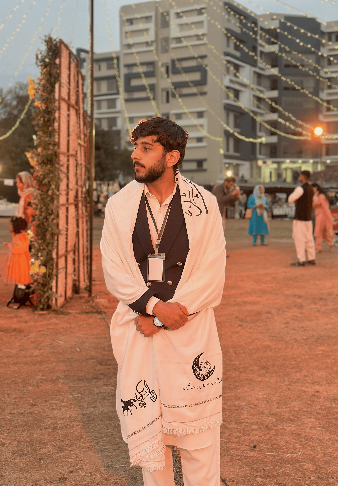

I'm a second-year Software Engineering student at NUST SEECS with a strong foundation in systems programming, object-oriented design, and algorithm analysis. My projects have ranged from game engines and search systems to hospital management platforms and navigation simulators — most of them starting as a small problem that ended up needing a search index, a graph, or a database more than I expected going in.
I'm currently a research intern on PakOS, a project proposing the architecture for a local Pakistani operating system, where I own the file system and system monitoring tools module. Outside of coursework and research, I help organize large-scale academic events at NUST, including SEECS Open House 2026 and the ICMAC 2025 conference.
Take a look at my skills, browse a gallery of my project work, read about what I do beyond coursework, or just get in touch.
A research project proposing the architecture for a Pakistani operating system, built through comparative analysis of existing OS design, resource management strategies, and core system concepts. My module: the file system and system monitoring tools.
Bachelor of Software Engineering · SEECS
Urdu (Native) · English (Professional)